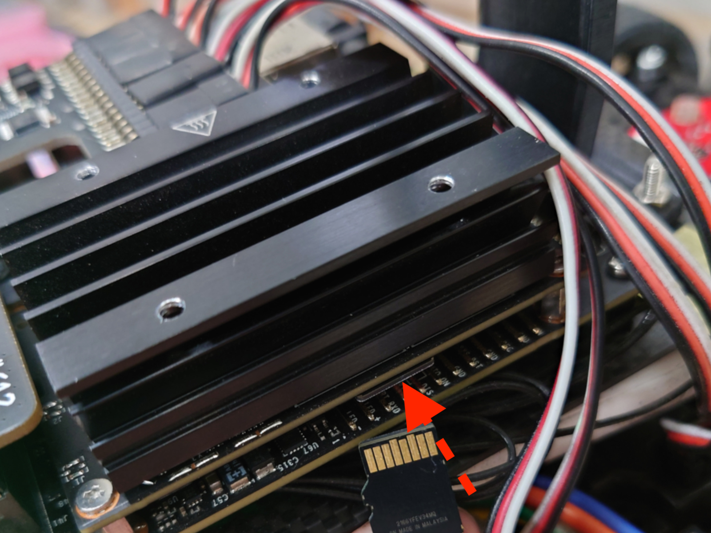
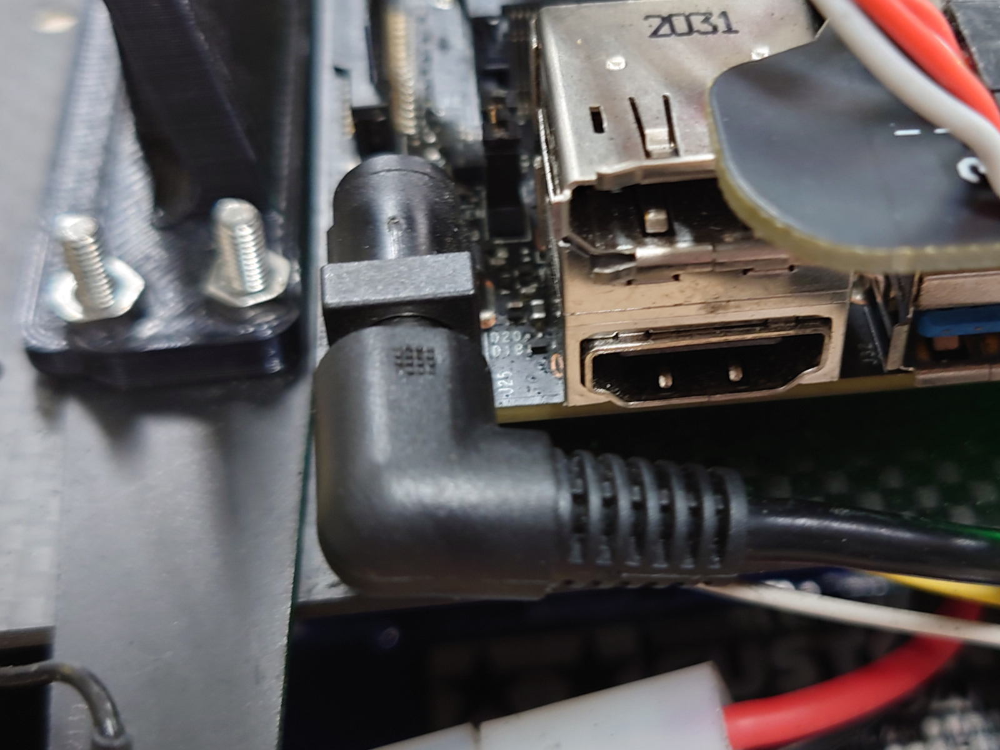
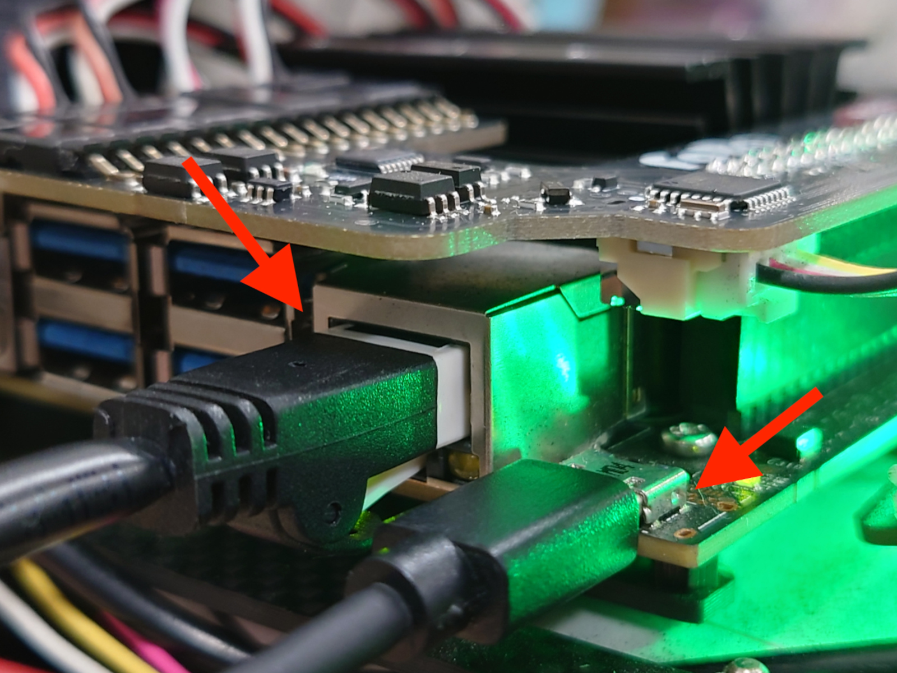
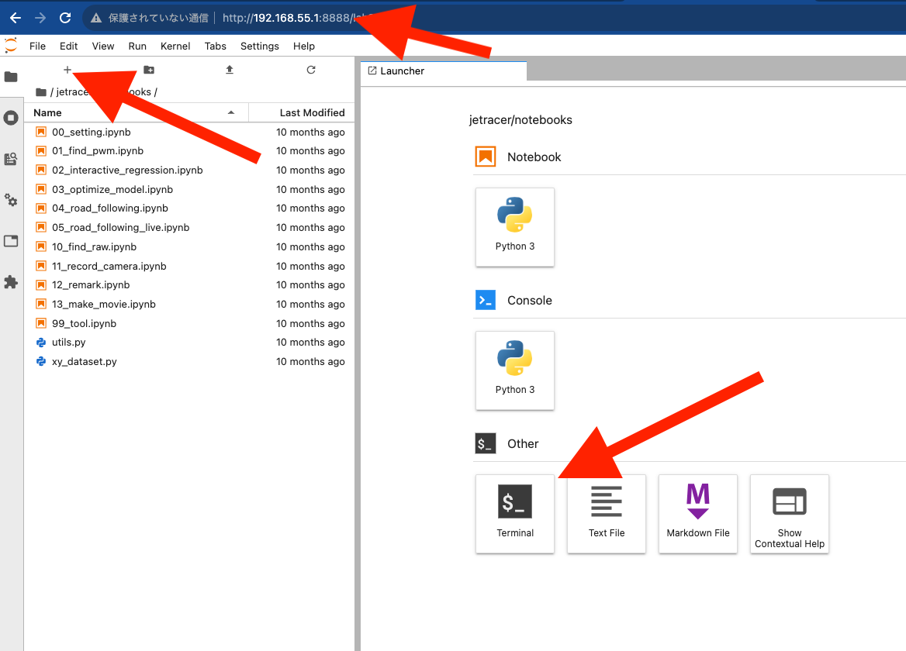

各種設定
解説動画
Tips
Wi-Fiの接続に何度も失敗して接続が安定しないときはnmcli conを実行して重複している接続をしらべてnmcli con delete \<uuid>コマンドで重複しているコネクションを削除してください。
Windowsユーザーのみなさま
PCのWindows環境のご使用で、USBマイクロケーブル接続時において接続が間欠で途切れる場合がございます。 対処方法はこちらをご覧ください。
Intel WiFiモジュールAX200付属の場合

Info
2023年10月出荷分より、Wi-Fiモジュールドライバーのインストール済みのため、以下の入力作業は不要になります。
AX200の場合は、デフォルトでは使用できず初期設定が必要になります。ドライバーをインストールするためには、有線LAN等のインターネット環境が必要となります。
付属のSDカードをJetsonNanoに挿入し、Jetson Nanoの電源を繋いでJetson Nanoを起動させます。有線LANでJetsonNanoをネットワークに繋いで 有機ELディスプレイに表示されるIPアドレス:8888またはUSBマイクロ接続の場合、192.168.55.1:8888をGoogle Chromeのアドレスバーに入力しパソコンからJetsonNanoにアクセスします。 ＋をクリックして新しいランチャーを開き、ターミナルを起動します。以下のコマンドを実行しドライバーをインストールします。
SDカード挿入

DCプラグをDCジャックに刺します。

マイクロUSBでパソコンとつなぎインターネットに接続された有線LANを繋ぐ。

chromeブラウザを起動し192.168.55.1:8888と入力する。terminalを選択する。

1 | |
1 | |
1 | |
1 2 3 4 5 6 7 | |
上記が表示されたら正常にインストールされました。
1 | |
1 | |
Tips
接続先のSSIDを調べるには、nmcli device wifi listコマンドで閲覧できます。
有線LAN、マイクロUSBを取り外しします。
JetRacerのOLEDディスプレイにIPアドレスが表示されるはずです。

例）192.168.XX.XX:8888にchromeブラウザでアクセスします。